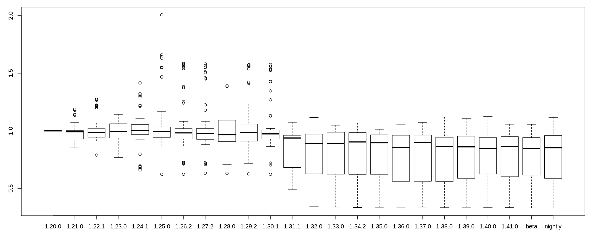

Performance comparison of rust versions
This is a performance benchmark of the rawloader rust crate across several rust versions. Rawloader reads most camera raw image formats and outputs a decompressed array of the individual pixel values. This benchmark tries to measure how the performance of different rust versions has impacted the performance of rawloader. See the methodology for more details.

| Version | Total Time (seconds) | Total Time versus First |
Total Time versus Previous |
|---|---|---|---|
| 1.20.0 | 9.058 | 1.000 | 1.000 |
| 1.21.0 | 8.674 | 0.958 | 0.958 |
| 1.22.1 | 8.686 | 0.959 | 1.001 |
| 1.23.0 | 8.683 | 0.959 | 1.000 |
| 1.24.1 | 8.907 | 0.983 | 1.026 |
| 1.25.0 | 8.811 | 0.973 | 0.989 |
| 1.26.2 | 8.829 | 0.975 | 1.002 |
| 1.27.2 | 8.800 | 0.971 | 0.997 |
| 1.28.0 | 8.692 | 0.960 | 0.988 |
| 1.29.0 | 8.629 | 0.953 | 0.993 |
| beta | 8.618 | 0.951 | 0.999 |
| nightly | 8.642 | 0.954 | 1.003 |
Copyright 2018 Pedro Côrte-Real